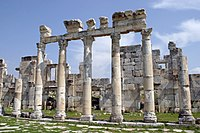

Mari ve Dura-Europos
Fırat kıyısında bulunan antik kentler, erken dönem uygarlık izleri taşır.
Daha fazla detay
Ülkemin en önemli kültürel ve tarihi miraslarından bazıları
Fırat kıyısında bulunan antik kentler, erken dönem uygarlık izleri taşır.
Daha fazla detay